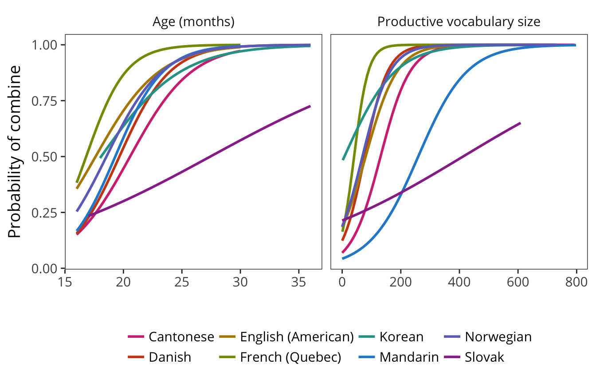
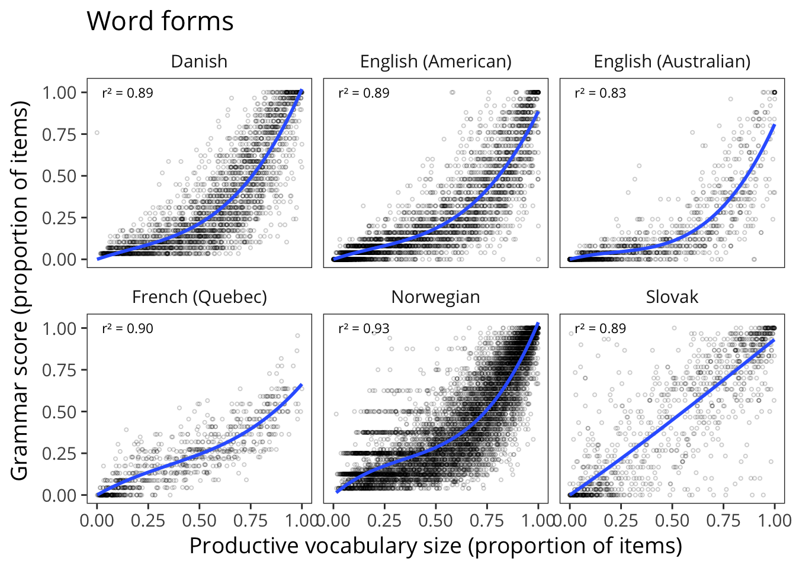
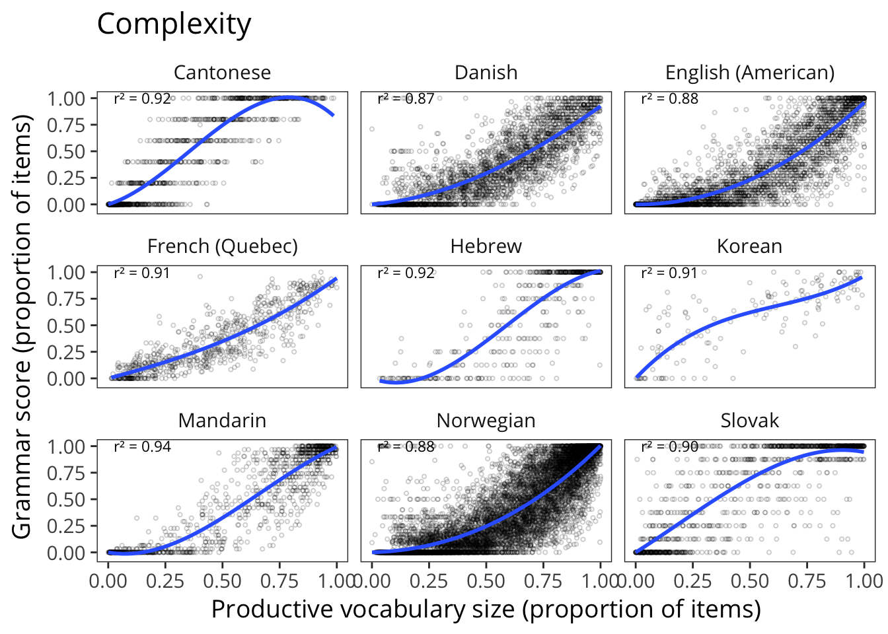
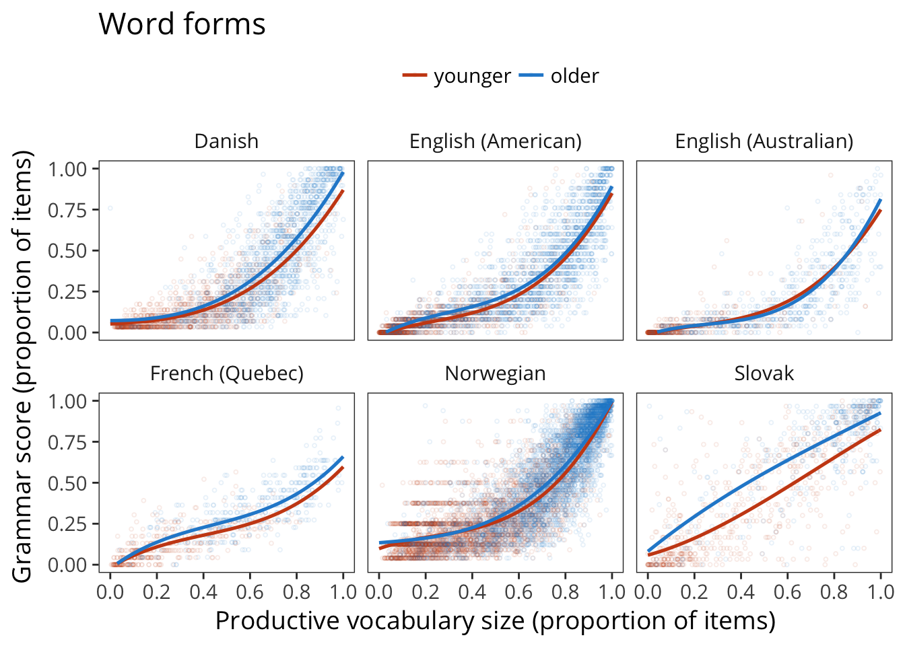
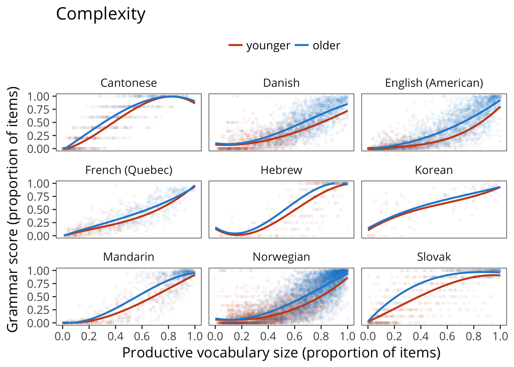
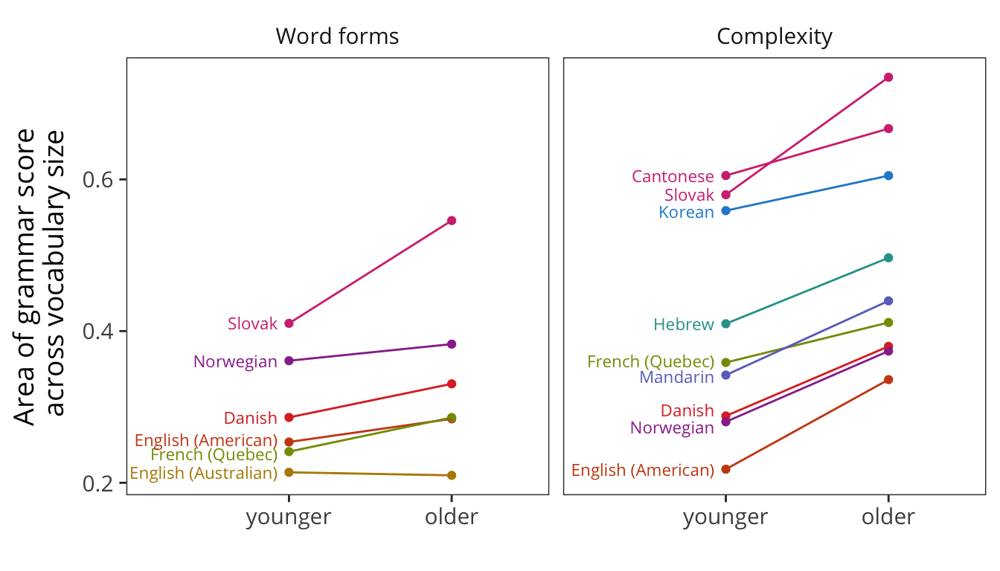
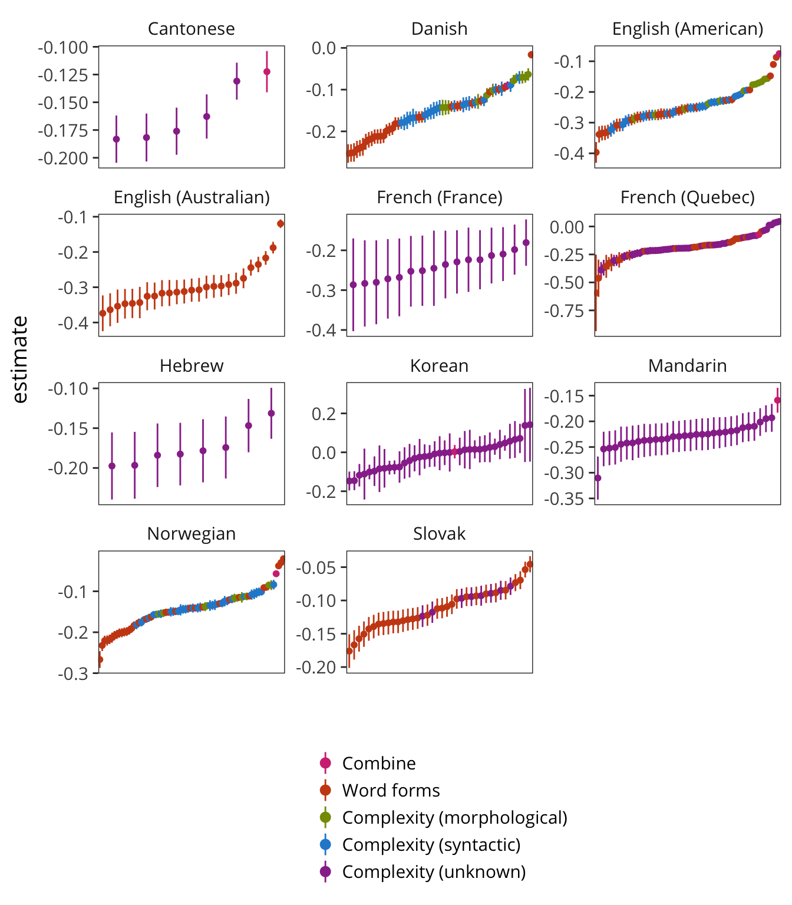

11 The Growth of Grammar
How does abstract structure emerge during language learning? On some accounts, children’s early syntax emerges from direct generalizations from particular lexical items, while on others, syntactic structure is acquired independently and follows its own timetable. We summarize the state of grammatical development across languages, noting the challenges posed by radically different representations of grammar across forms. We also replicate and generalize analyses linking grammatical generalization to children’s vocabulary size. We end by investigating the idea that that age modulates the relationship between grammar and the lexicon.1
11.1 Introduction
For many children, their first words are spoken in isolation. While these single word utterances sometimes seem to be picking out objects in the world (e.g., ball!), others seem to convey more complex ideas or desires (e.g., up! for Mommy, pick me up!). But by two years of age, many children have acquired a large repertoire of words, and are beginning to use them in two- or three-word combinations (e.g., Mommy up! or kitty sleep here). These utterances will gradually increase in length and complexity in various ways, forming sentences that increasingly reflect the grammatical structure of their native language (e.g., Mommy, the kitty is sleeping here). Children also begin to add more verbs, adjectives and other predicates to their working vocabularies, and substantively increase their use of prepositions, articles and other closed class forms that do grammatical work, including the productive use of inflectional morphemes (e.g., English past tense ed or ing).
Understanding the origins of grammar is critical because children’s ability to use morphosyntactically-rich language is thought to reflect the uniquely-human mental machinary that enables speakers to produce novel utterances that have never been heard in the input (Berko (1958), (???)). The questions surrounding the development of grammar are challenging. How do abstract morphosyntactic structures emerge during language learning? What mechanisms underlie the formation of generalizations that support such inferences and allow children to apply them during language production? Does an understanding of the abstract rule-structure of language emerge from the interactions of individual words, or is that structure independently acquired and represented separately?
Broadly speaking, theoretical views on grammatical development generally take one of two forms. On nativist theories like principles and parameters (Chomsky 1981; Baker 2005), grammar emerges independently from lexical knowledge following its own, largely maturational, timetable. Moreover, grammatical regularities are mentally represented in a format that is distinct from that used by the lexical system. In contrast, according to lexicalist theories, mental representations of morphosyntactic structure generally emerge from graded generalizations on the basis of lexical items, and at least early in development, there may be little or no representation of morphosyntactic rules or regularities per se (Tomasello 2003, Elman et al. (1996)). Even when syntactic structures are eventually represented, these representations are directly related to more concrete lexical structures (Bannard, Lieven, and Tomasello 2009).
Historically, the study of individual differences has been critial to this debate. While variation in word learning is generally uncontroversial, individual differences in grammatical development is less clearly aligned with a universalist, nativist perspective. In contrast, lexicalist theories predict that variation in grammatical development should be tightly yoked to variation in lexical development (Bates and Goodman 1999). Research has shown that, as with lexical development, there is sizeable variation in exactly when and how children move into using more grammatically complex utterances in their everyday speech. While some children use primarily multi-word phrases and many closed class forms by 24 months, other children are still primarily producing nouns in single word utterances at that same age (e.g., (???); Bates and Goodman (1999)). Moreover, there is also variation in the kinds of multi-word utterances that children produce. For example, some children build up sentences from individual words (e.g., want dat!), whereas, other children seem to produce utterances that reflect “unanalyzed” chunks of more complex speech (e.g., iwantdodat!).
Critically, associations between individual differences in lexical and grammatical development have been robustly substantiated in the literature. Based on the original norming data from the English CDI: Words & Sentences, children with more sophisticated grammatical productions were also those children with the largest vocabularies (Bates et al. (1994)). Using that same dataset, Marchman and Bates (1994) found that size of verb vocabulary was concurrently related to children’s overregularization of past tense inflections (e.g., daddy goed), productions that are viewed as a major milestone in the development of grammatical rule-based knowledge. MAY WANT TO TRIM DOWN THESE REFERENCES. STILL NEED TO PUT IN BIB. Links between lexical development and grammar have also been reported longitudinally ((???); Bates and Goodman (1997)), in late talkers (e.g., Paul, 1996, 1997; Rescorla & Schwartz, 1993; Rescorla, Roberts & Dahlsgaard, 1997, 2000; Thal & Tobias, 1994; Thal & Katich, 1996), early talkers (Thal, Bates, Zappia & Oroz, 1996; Thal, Bates, Goodman, & Jahn-Samilo, 1997), and children with neurodevelopmental disorders, such as Williams syndrome (e.g., Singer-Harris, Bellugi, Bates, Jones, & Rossen, 1997). Critically, similar relationships have also been demonstrated in many other languages, including Slovenian (Marjanovic-Umek, Fekonja-Peklaj, & Podlesek, 2013), Hebrew (Maital, Dromi, Sagi, & Bornstein, 2000), Icelandic (Thordardottir, Ellis Weismer, & Evans, 2002), Italian (Caselli, Casadio, and Bates (1999); (???)), Bulgarian (Andonova, 2015), Finnish (e.g., (???)), Turkish (Turkay, 2013), Spanish (e.g., Mariscal & Gallego, 2012; Thal, Jackson-Maldonado, and Acosta (2000)), and German (Szagun, Steinbrink, Franik, & Stumper, 2006). Finally, strong heritability of the relation between lexical and grammatical level has been documented in behavioral genetic studies of monozygotic and dizygotic twins ((???)). In other words, even though genetic factors contribute relatively weakly to each aspect of language assessed individually, the genetic factors that influence lexical growth are the same as those that influence grammatical growth. COULD ADD BILINGUALS?
While these studies substantiate that vocabulary and grammar development are strongly associated developmentally, the interpretation of these relations is still under debate. Some researchers have interpreted these links to suggest that domain-general learning mechanisms guide the child’s construction of a working linguistic system at many different levels, in this case, learning words and learning grammatical rules (e.g., Bresnan, Tomasello, Elman et al., 1996). As Bates and MacWhinney proposed many years ago, “the native speaker learns to map phrasal configurations onto propositions, using the same learning principles and representational mechanisms needed to map single words onto their meanings” ((???), p. 163). Other proposals suggest that the process of learning words involves learning both their lexical-semantic and their morphosyntactic properties (e.g., in what constructions they can legally appear and what inflectional morphemes are required). Other theories propose that grammatical knowledge is built up on a case-by-case basis. Early word combinations are often highly routinized and situation specific, suggesting that learning grammar, like word learning, is guided by learning mechanisms that are item specific and frequency dependent. It is only later that grammatical structures become encoded in terms of their abstract syntactic form (e.g. Akhtar, 1999; Lieven, Pine & Baldwin, 1997; Tomasello, 2001). Finally, yet another accounts views the relation as reflecting mechanisms that operate in the opposite direction. Grammatical analysis is a driving force behind word learning, such that the process of analyzing sentences into their constituent grammatical parts facilitates the further acquisition of lexical-semantic knowledge (Anisfeld, Rosenberg, Hoberman & Gasparini, 1998; Gleitman, 1990; (???)).
11.2 Goals of the current analyses
In this chapter, we explore relations between estimates of children’s vocabulary size based on the vocabulary checklist and responses on other sections of the Words and Sentences instruments. Many versions of the instruments provide indices of grammar learning by asking about children’s use of inflected forms (e.g., walked), children’s use of overgeneralizations (e.g., goed), and the complexity of their word combinations (e.g., kitty sleeping / kitty is sleeping). While many studies have examined associations between lexical and grammatical development crosslinguistically, the scope and power of these early studies were limited, relying on relatively small norming samples (1000–2000 children) with few opportunities for direct comparisons of the nature or extent of these relations across multiple languages at the same time. The data available in Wordbank allows analyses of lexical-grammar relations with enhanced statistical power and broader cross-linguistic representation.
In addition, we explore a hypothesis that was not explicitly tested in these earlier studies: that there remains age-related variance in grammatical development unexplained by vocabulary development. While the overall relationship between grammar and the lexicon provides support for lexicalist theories, the identification of age-related variance would suggest the presence of developmental processes that regulate grammar learning, above and beyond those captured by measures of vocabulary size. Such age-related processes could be either maturational or experiential, and either domain-general (like working memory) or language-specific (like grammatical competency). Importantly, since both nativist and constructivist theories could in principle predict age-linked variance in grammatical development, our goal is not to differentiate these theories, but instead to test this novel prediction and explore its implications for future work on understanding the processes of grammatical development.
An additional contribution of work is that, due to the size of our dataset, we are able to make more fine-grained distinctions than the initial cut between grammar and the lexicon. In particular, we distinguish morphology from multi-word syntax, since morphological generalizations might be more specifically dependent on vocabulary size than those requiring more global, sentence-level syntactic regularities.
11.3 Methods
In all 11 languages included in these analyses, the CDI forms contain both vocabulary checklists and other questions relevant to the child’s linguistic development. All of the data reported here come from the Words & Sentences form, administered to children ages 16–32 months. Each of these instruments includes a Vocabulary section, which asks whether the child produces each of around 700 words from a variety of semantic and syntactic categories (e.g., foot, run, so); a Word Form section, which asks whether the child produces each of around 30 morphologically inflected forms of nouns and verbs (e.g., feet, ran); and a Complexity section, which asks whether the child’s speech is most similar to the syntactically simpler or more complex versions of around 40 sentences (e.g., two foot / two feet, there a kitty / there’s a kitty). Each language’s instrument is not just a translation of the English form, but rather was constructed and normed to reflect the lexicon and grammar of that language.
To analyze lexical and grammatical development, we derive several measures. Each child’s Vocabulary Size is computed as the proportion of words on the corresponding CDI form that the child is reported to produce. Similarly, each child’s Word Form score is the proportion of word forms they are reported to produce, and their Complexity score the proportion of complexity items for which they are reported to use the more complex form. We compute all of these quantities as proportions to make the scales comparable across languages.
11.3.1 Items
11.4 Results
11.4.1 Combine

11.4.2 Grammar and lexicon relationship
 
11.4.3 Age effect
 

11.4.4 Individual items

11.5 Discussion
The current study revisits classic findings but also explores novel questions regarding lexicon-grammar relations and vocabulary composition through Wordbank, a newly-developed web-based tool for cross-linguistic analyses of large CDI datasets. Our results provided general support for a lexicalist view, in that, in 11 languages, variance in vocabulary production strongly aligned with variance in grammar. However, we also estimated additional age-related contributions, specifically contrasting the links to morphological forms vs. syntactic constructions, and for different lexical categories. In general, we find that measures of grammar that are more closely aligned with syntax are modulated by age to a greater extent than those reflecting inflectional morphology.
Our analyses suggest interesting new areas of research regarding possible mechanisms driving children’s early lexical development and how those mechanisms might support children’s transition from single words to more morphosyntactically complex utterances. One possibility is that these developments are dependent on maturational factors that operate on grammatical development in a domain-specific way, independent of lexical-semantic processes. Another possibility is that age-related effects represent more domain-general learning mechanisms, such as attention or working memory, that provide differential support for sentence-level processes than word-internal ones (???). Future studies should also explore the extent to which lexical and age-related processes are shaped, either independently or in tandem, by features of the learning environments that children experience (e.g., Weisleder and Fernald 2013).
Questions about the nature of morphosyntactic representations in early language have often seemed deadlocked. But by mapping out developmental change across large samples and multiple languages, our findings here challenge theories across the full range of perspectives to more fully describe the mechanistic factors underlying the interaction of vocabulary, grammar, and development.
Material in this chapter first reported in (???).↩